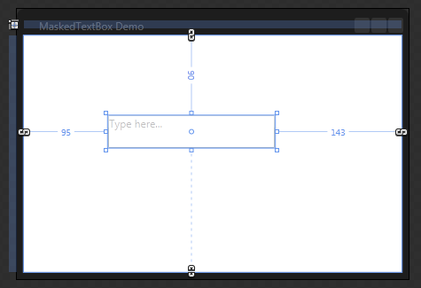
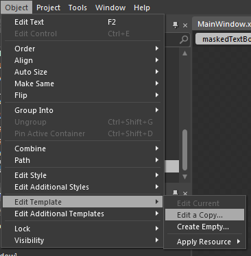
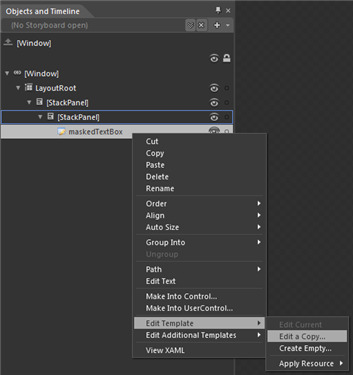
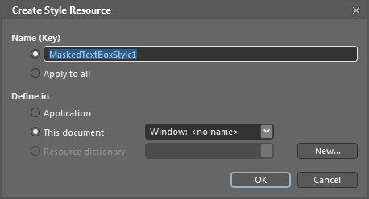
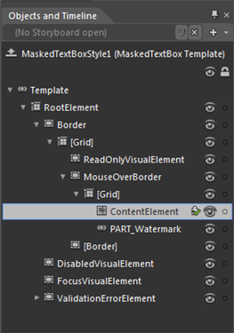
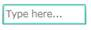

You can edit MaskedTextBox Template using Expression Blend in order to give a nice look and feel. Start by creating simple Silverlight application in Blend.
After this simply drag and drop MaskedTextBox into application from Assets tab.

Figure 197: Edit MaskedTextBox Template using Expression Blend
After creating the MaskedTextBox, select it and go to “Object” -> “Edit Style” -> “Edit a Copy” to edit the Template of MaskedTextBox.

Figure 198: “Object” -> “Edit Style” -> “Edit a Copy”
Another way to Edit Template, Right click on MaskedTextBox control in Object and Timeline and choose Edit Template option as shown below

Figure 199: Another way to Edit Template
This will open a dialog (below) where you can give our style a name and define exactly where you want to store it.

Figure 200: Create Style Resource
The above steps include some lines of XAML within your application. This XAML represents the default style for percent MaskedTextBox.
|
<syncfusion:MaskedTextBox x:Name="maskedTextBox" Width="150" Height="25" Mask="00/00/0000 00:00" CornerRadius="4" Style="{DynamicResource MaskedTextBoxStyle1}"/> |
All template items can now found in the Objects and Timeline window.

Figure 201: Objects and Timeline window
Now you can edit each Part in the template. Here is the code to modify the Mouse over state of the MaskedTextBox.
|
XAML |
|
<VisualState x:Name="MouseOver"> <Storyboard> <ColorAnimationUsingKeyFrames Storyboard.TargetProperty="(Border.BorderBrush).(SolidColorBrush.Color)" Storyboard.TargetName="MouseOverBorder"> <SplineColorKeyFrame KeyTime="0" Value="#FF22DCB9"/> </ColorAnimationUsingKeyFrames> </Storyboard> </VisualState> |

Figure 202: Modify the Mouse over state of the MaskedTextBox